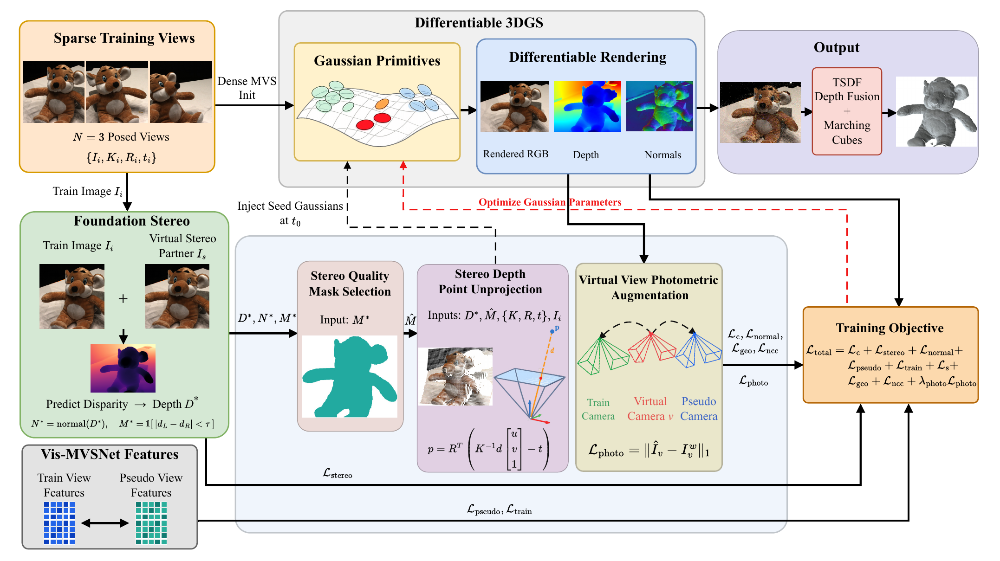
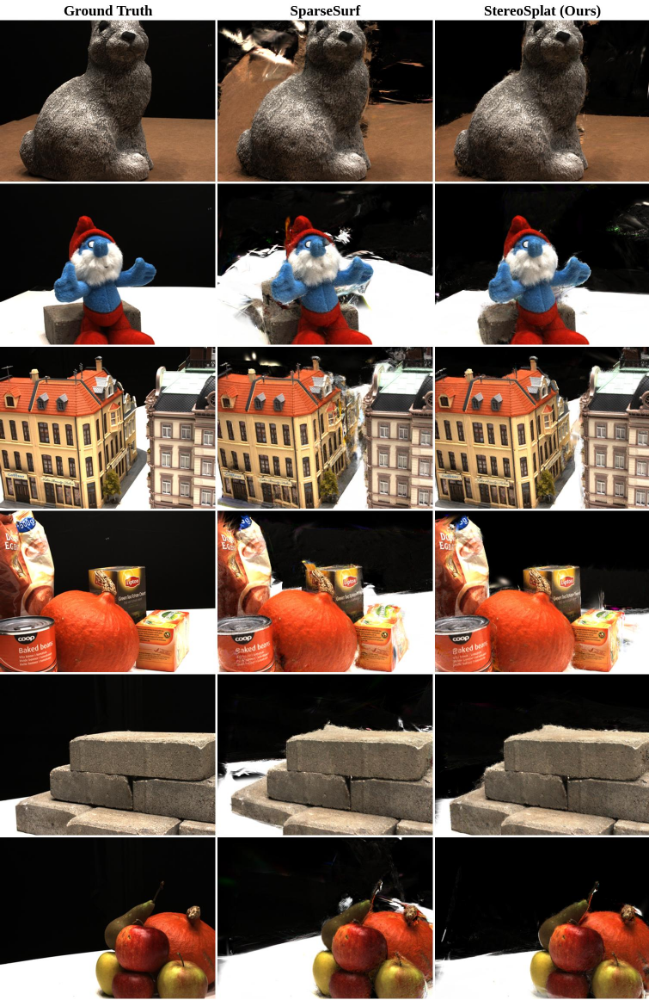
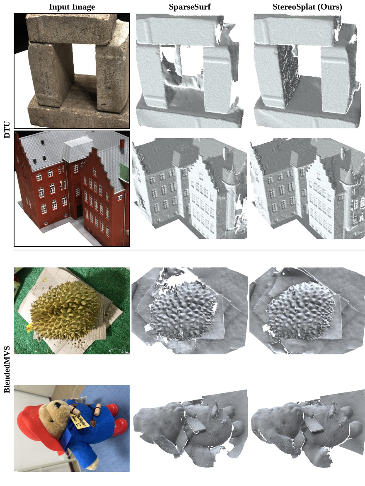
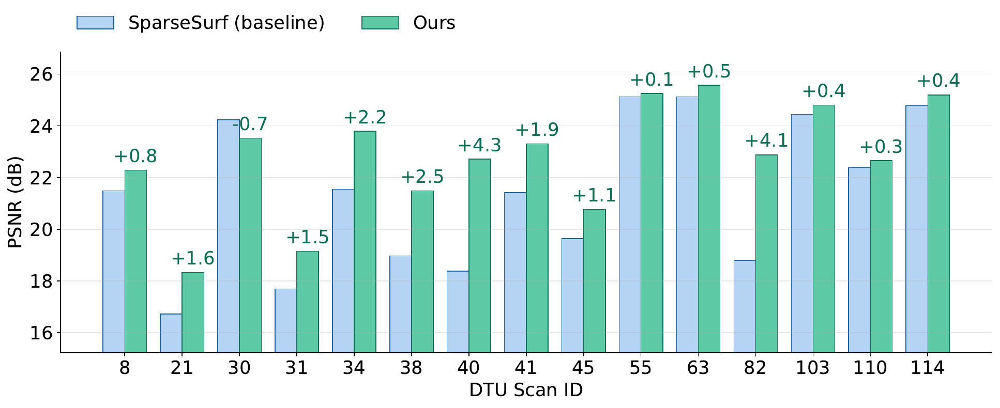

Overview of StereoSplat. The dense stereo-depth maps estimated during training are unprojected into 3D seed points and injected as new Gaussian primitives, filtered by a within-view stereo quality mask and complemented by virtual-view photometric augmentation, filling the coverage gaps left by the dense MVS initialization from only three input views.
Reconstructing three-dimensional (3D) scenes from a few input views remains difficult when dense image acquisition is impractical. Recent sparse-view surface reconstruction methods based on 3D Gaussian Splatting rely on stereo matching to guide optimization; however, the dense metric depth they compute is underexploited, serving merely as a loss signal that adjusts existing primitives. To address this limitation, this study proposes StereoSplat, which converts this overlooked depth into explicit scene geometry and thereby improves novel-view synthesis while preserving or enhancing surface reconstruction. Specifically, Stereo-Depth Point Unprojection lifts dense stereo-depth maps into 3D seed points and injects them as new Gaussian primitives, filling coverage gaps left by the initial dense multi-view stereo (MVS) point cloud in textureless and occluded regions. To ensure reliability, Stereo Quality Mask Selection retains only points that pass a left-right consistency check. Our analysis further shows that this within-view criterion is preferable to cross-view filtering, as the latter discards genuine surfaces visible from only a single view. In addition, Virtual View Photometric Augmentation enriches supervision by synthesizing virtual viewpoints near the training cameras and comparing the rendered appearance with forward-warped images. On the DTU dataset, StereoSplat attains a PSNR of 22.78 dB on the novel-view synthesis benchmark, surpassing state-of-the-art methods with consistent gains in SSIM, LPIPS, and AVGE. Moreover, surface accuracy is preserved under the large-overlap setting (mean Chamfer distance 0.86 versus 0.89) and improved under the little-overlap setting (0.97 versus 1.05). Overall, these results reveal that initialization coverage, instead of optimization regularization, is the dominant bottleneck in Gaussian-based sparse-view reconstruction.

Qualitative novel-view synthesis on DTU from only three input views. StereoSplat recovers geometry in textureless and occluded regions that the baseline leaves incomplete, yielding sharper renderings that are closer to the ground truth.

Qualitative surface reconstruction on DTU and BlendedMVS. Injecting reliable stereo-depth points fills coverage gaps in the reconstructed meshes while preserving accuracy on well-covered surfaces.

Per-scan PSNR on the DTU novel-view synthesis benchmark. StereoSplat improves over the baseline across the majority of scenes, with the largest gains on scenes where the dense MVS initialization is sparsest.
The full implementation will be released upon acceptance.
@article{stereosplat2025,
title = {StereoSplat: Enhanced Sparse-View 3D Gaussian Splatting via Stereo-Depth Bootstrapping},
author = {Goshu, Hana L. and Wakjira, Tadesse G. and Lam, Kin-Man},
year = {2025},
note = {Under Review}
}